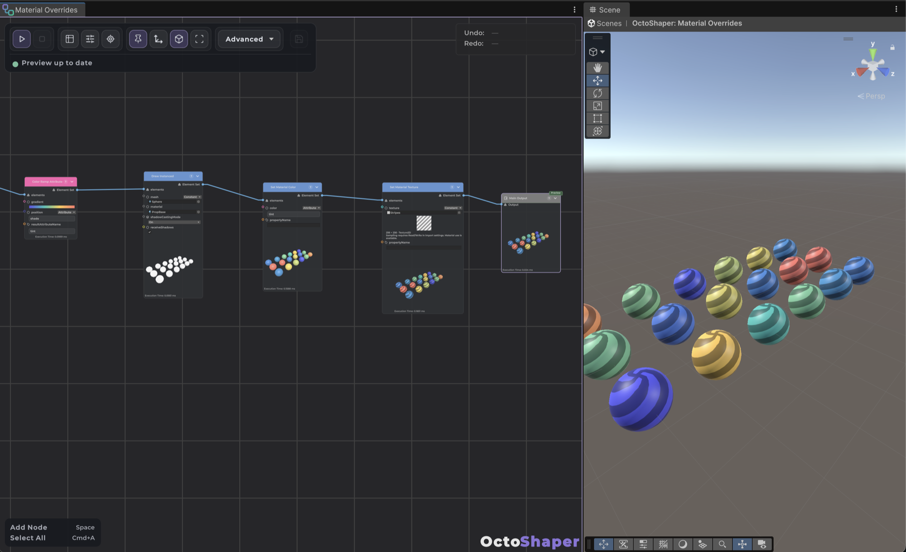

Colors, Textures and Materials
The Colorful Update adds nodes that give generated content its look. You can compute colors per element, read and project textures, displace geometry with a height map, and vary material colors, textures and floats on every instance without touching the source material.
Three ways to add color
| You want | Use | Works on |
|---|---|---|
| One color per instance | Set Material Color after a draw node | Draw Instanced, Draw Instanced Indirect, procedural prefabs |
| Colors varying across one mesh | Set Vertex Color before Realize Meshes | Point-based meshes (the shader must read vertex colors) |
| A texture on the material | Set Material Texture / Texture Transform | Any drawn mesh |
All three read colors from the graph, usually from a tint attribute you compute with the Colors nodes.
Color nodes
Every color node has a scalar version and an Attribute version that evaluates per element:
- Create Color RGBA / HSV: build colors from components.
- Blend Colors: Mix, Add, Subtract, Multiply, Screen, Overlay, Minimum or Maximum.
- Color Channel: read R, G, B, A, luminance (Rec.709) or H, S, V.
- Adjust: Set Color Alpha, Invert, Exposure, Saturation, Contrast, Clamp, sRGB ↔ Linear.
- Color Ramp: evaluate a gradient at a 0–1 position.
RGB can go above one for HDR. Adjustments don't clamp implicitly, so add Clamp Color when you need a 0–1 result.
Tip: To color by height, slope or noise, normalize that value to 0–1 and use Color Ramp Attribute with Position bound to the attribute. It writes
tint, and you can blend or adjusttintin place afterwards.
Height map to terrain
- Import the height texture with Read/Write enabled and sRGB disabled.
- Generate a subdivided point-based mesh, for example Plane Mesh.
- Add Project UV From Position. Set Position to Attribute
position, choose XZ, set Scale to one over the map's world size, and adjust Offset to cover the 0–1 range. It writesuv0. - Add Displace By Texture, pick the texture and bind UV to Attribute
uv0. Strength sets the height and Midlevel is the value that causes no movement. The default zero Direction means local up. - Recalculate normals, then Realize Meshes → Draw Instanced (Mesh: Attribute
mesh).
For a plane from −5 to +5, a Scale of 0.1 and an Offset of (0.5, 0.5) cover the whole texture. To keep heights as data instead of moving points, use Sample Texture Height, which writes (channel − midlevel) × strength into a float attribute.
Note: Displace before realizing. After Realize Meshes, displacement moves whole instances, not their vertices.

Color map across many instances
- Project positions into
uv0, or build UVs from two floats with Create UV Attribute. - Sample Texture Attribute writes the sampled RGBA into
tint. - After Draw Instanced, add Set Material Color with Color set to Attribute
tint.
Material overrides

Set Material Color, Set Material Texture, Set Material Float and Set Material Texture Transform live in Rendering → Materials. Place them after a draw node, or after a subgraph whose output contains draw results. They require the renderDefinition attribute that draw nodes add, and the editor tells you if it's missing.
- Leave Property Name empty to target the shader's main color or texture (
_BaseColor/_BaseMap, or_Color/_MainTex). Otherwise type the shader's reference name, not its Inspector label. - Set Material Float can drive smoothness, metallic or any Float/Range property. Names and types are validated.
- Overrides work in Edit Mode and Play Mode, and procedural prefabs save them.
- Prefab GameObject rows keep their own renderers and materials. Overrides only affect drawn mesh rows.
Keep batches small. Identical override combinations share a batch, so a small palette is cheap. Unique values on every instance increase draw calls. For thousands of unique colors, a texture or vertex-color shader is more efficient.
Overrides don't change shader keywords, transparency or render state. Configure those on the source material. For example, enable its normal-map or emission feature before overriding those textures.
Texture sampling details
- CPU sampling accepts Texture2D with Read/Write enabled. RenderTextures and cubemaps can be assigned to material properties but can't be sampled on the CPU.
- UVs are normalized, with (0,0) at the bottom left. Point and Bilinear filters are available.
- Wrap defaults to the texture's settings. Clamp, Repeat, Mirror and Mirror Once can be forced.
- Values are raw by default. Enable Decode sRGB only for sRGB color data when later math expects linear values.
- Each distinct texture is copied once per node run, then sampled from that copy. Smaller mip levels mean less work.
New parameter and attribute types
Graphs can now expose Color, Texture, Texture 2D, Gradient and Vector2 parameters, with HDR color pickers, texture thumbnails and Unity's gradient editor. The older Core color type is still available as Color (Core), and Core Color To Color converts it.
For C#, the new bindings are ColorValueOrAttribute, TextureValueOrAttribute and Vector2ValueOrAttribute in CuriousTrove.OctoShaper.Core.Data. See Creating custom nodes.
The bundled samples include color and palette setups you can study and copy.
Frequently asked questions
Why does Sample Texture report an error about my texture?
Texture2D.GetPixels supports. Crunched formats are rejected. RGBA32 is a safe choice.Do material overrides create new materials?
Should I use tint or color for my attribute?
tint for Unity color attributes. color is the mesh vertex-color channel. Set Vertex Color converts a tint binding into it before realization.